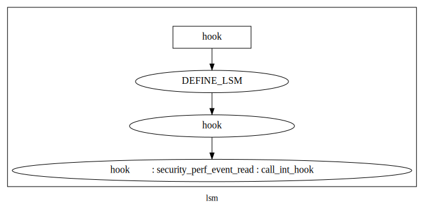

linux security子系统¶
不能以模块形式出现,全部集成在内核中.
静态hook,跟trace静态插桩部分是一样一样的.LSM不是一种策略,只是一种实现机制,一种框架,在其基础上可以实现策略.
LSM模块：linux 通用安全hooks¶
其他安全策略都基于LSM进行实现.
DEFINE_LSM():将加载hook放入特定的节.系统启动时会执行hook加载动作.运行过程中在桩点调用触发函数,运行特定位置的hook函数.
selinux,smack tomoyo yama等均通过lsm(DEFINE_LSM)实现,没有例外.其中也夹杂了协议过滤部分.
其中静态插桩点定义可以参考:include/linux/lsm_hook_defs.h
调用函数封装: security/security.c
策略注册: DEFINE_LSM
我们以 kernel/schdule/core.c 系统掉调用sched_getparam为例:
sched_getparam –> security_task_getscheduler –>call_int_hook(task_getscheduler)
call_int_hook定义如下:
enum kobject_action¶
1 2 3 4 5 6 7 8 9 10 11 12 13 | #define call_int_hook(FUNC, IRC, ...) ({ \
int RC = IRC; \
do { \
struct security_hook_list *P; \
\
hlist_for_each_entry(P, &security_hook_heads.FUNC, list) { \
RC = P->hook.FUNC(__VA_ARGS__); \
if (RC != 0) \
break; \
} \
} while (0); \
RC; \
})
|
要想在这个位置执行我们的安全策略,可以做如下操作(借用selinux代码: